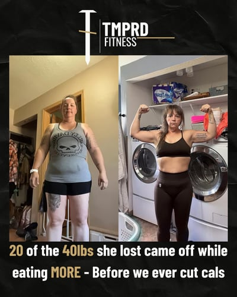
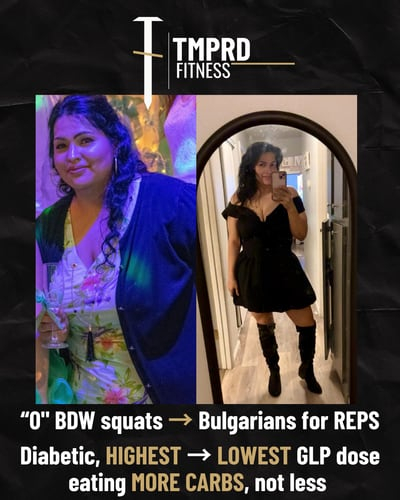
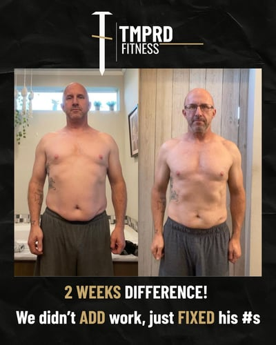
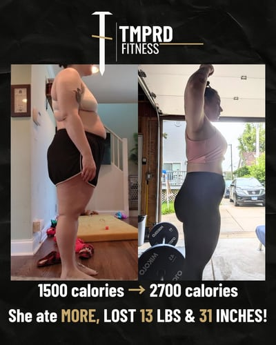
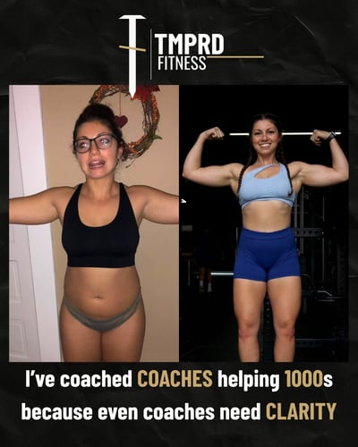
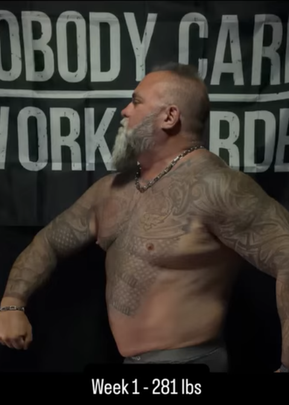
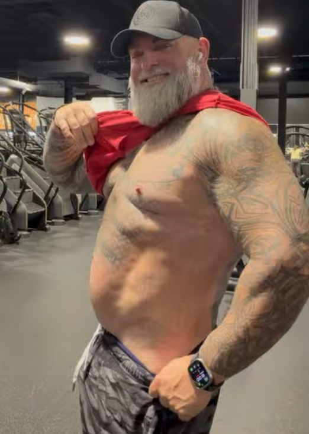
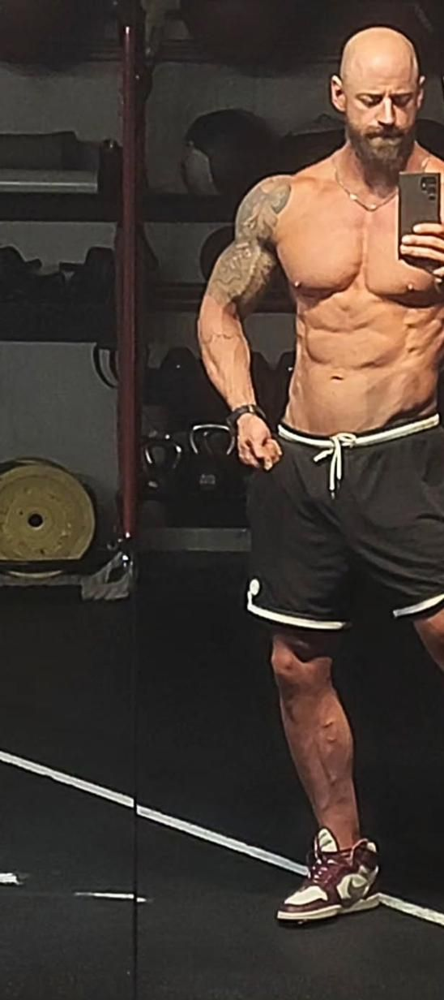
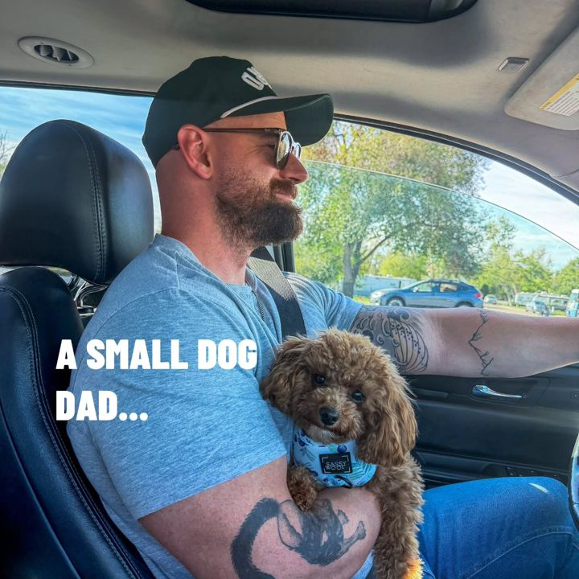
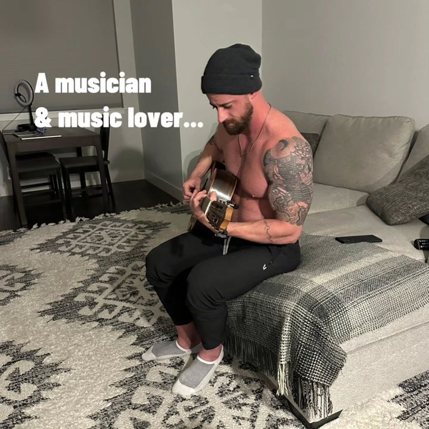

You eat less and less, and the scale stays put.
Every few weeks you trim a little more. Now you're hungry, flat and irritable.
1:1 coaching · Fat loss & physique
You're putting in the work and the scale still won't move. I'm Alex. I help you find where your body stands, then build a plan around your life.
20 minutes. Free. No pressure, no pitch.

Most people who message me are tired, confused and doing everything the internet told them to.
Every few weeks you trim a little more. Now you're hungry, flat and irritable.
A hard cut works for a while. Then the rebound hits and you land right where you started, or a bit past it.
Most people don't know their number. You were never shown how to track it.
One number on one morning can ruin the day, while your clothes fit better, you're stronger and you're sleeping well.
This is fixable.
It sounds backwards until you see the loop.
We track one week, exactly as you eat it, and read what it shows.
If you've been under-eating for months, cutting harder is the wrong move. We raise your intake slowly first, then cut.
Photos, measurements, how your clothes fit, your energy, sleep, mood and the weight on the bar.
Starving yourself breaks this loop at step one.







Results vary. Every body, schedule and starting point is different.


“Started at 281 and today as of this morning I’m 254.8 and we ARE NOT DONE. This is what a coach gets you with consistent feedback, evaluation and psychological investment in unpacking all the bad habits. @iamalex_tmprd.fit did exactly that and still is coach.”Ryan · Coaching client


“Thank you for being one of the best coaches for getting your health back on track and understanding how to do a real cut healthily.”@az3w0ra1 · 2-year journey

To temper metal is to refine it with pressure, heat and stress, then harden it. My life did that over the last 5–6 years.
I've always done the safe thing. A safe marriage that wasn't the right one. Bodybuilding, which kept me small in other places. I hid behind supplements, excuses and security, because nobody wants to be held over the fire.
But life finds a way to do it anyway. I made my physique the best it could be while the rest of my life fell into a burning heap.
You can be destroyed by the fire, or you can make something from it.
I help people reach their fitness goals and use fitness to level up everything else. Outside the gym, I'm a few other things too:



I'll teach you how to run your own body, so you won't need me forever.
Women who want to feel good in their body again.
Men who want more at work and at home, and aren't sure how.
Army men and women aiming to improve their ACFT score.
People taking time off stage to heal hormones and health.
20 minutes. We talk about where you are and what you've tried.
You track one week. No cleaning it up, no being good.
Calories, protein and training that fit your life, not a template.
We adjust as your body responds, until you can do it yourself.
Free · About a minute
Enter your stats and your usual day of eating. I'll show you your maintenance calories and whether you need to eat more or less.
Check my metabolism →Videos & posts
Short videos on food, lifting and tracking progress without leaning on the scale.
Watch on Instagram →Book a free 20-minute call, then track one week of eating so we can find your numbers. I build a plan around calories, protein and training that fits your life, and we check in weekly and adjust as your body responds.
Not always. If you've been under-eating for months, cutting harder is usually the wrong move. We raise your intake slowly first, then cut, so the fat loss lasts.
A reverse diet raises your calories gradually after a long stretch of under-eating. It sets you up to lose fat later without crashing back to where you started.
Yes. I coach about 40 people at a time, and you work with me directly.
It's 20 minutes. We talk about where you are and what you've tried, and what I'd do first. If I'm not the right fit, I'll tell you.
Want a number first? Try the free metabolism check.
Your next move
Book a free 20-minute call. If I'm not the right fit, I'll tell you.
20 minutes · Free · Zero obligation